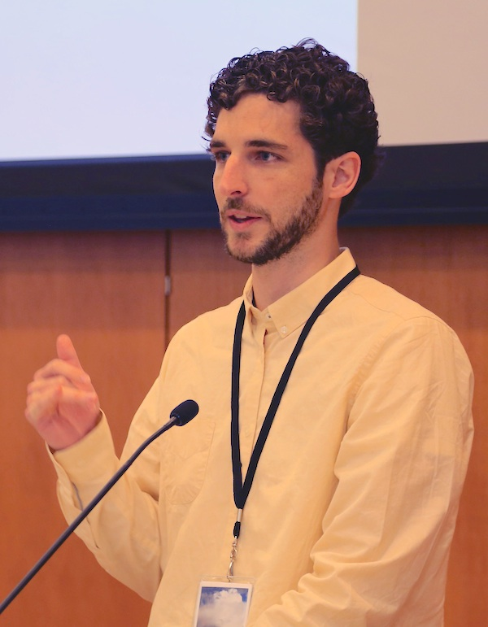
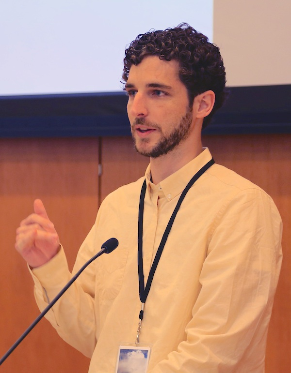

Photo: Caltech Monsoon Workshop

Photo: Caltech Monsoon Workshop
I am climate scientist working at the Program for Atmospheric and Oceanic Sciences and Cooperative Institute for Modeling the Earth System at Princeton University. Previously, I was an Associate Professor in Atmospheric and Oceanic Sciences at McGill University.
Google Scholar ProfileMy research is focused on climate dynamics including tropical meteorology, climate sensitivity, the ocean-atmosphere general circulation, and the atmospheric hydrological cycle. I aim to expose the physical mechanisms underlying changes in both past and future climates.
email: tmerlis@princeton.edu
pronouns: he/him